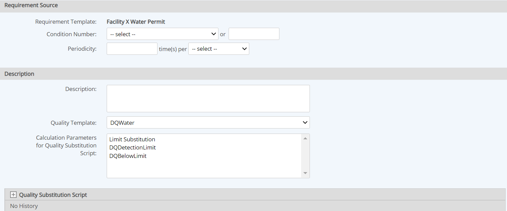

Data Quality Templates may be applied to Parameter requirements only. The template may be applied when creating the requirement. It may also be added or changed later, for a single or multiple parameters.
To apply a Data Quality Template to a new parameter:
While creating the parameter, In the Quality Template section of the properties page for the parameter requirement, select the Data Quality Template from the dropdown list.
The numeric and Boolean fields on the template appear as Calculation Parameters for an optional Quality Substitution Script. Otherwise, the fields are available simply for informational purposes.

Optional: To define a data substitution script, click the plus sign (+) to expand the Quality Substitution Script section. For instructions on defining the substitution script, see Data Substitution Scripts.
To apply a Data Quality Template to an existing parameter:
Changing an existing template applied to a an object may result in loss of data for fields not present on the new template.